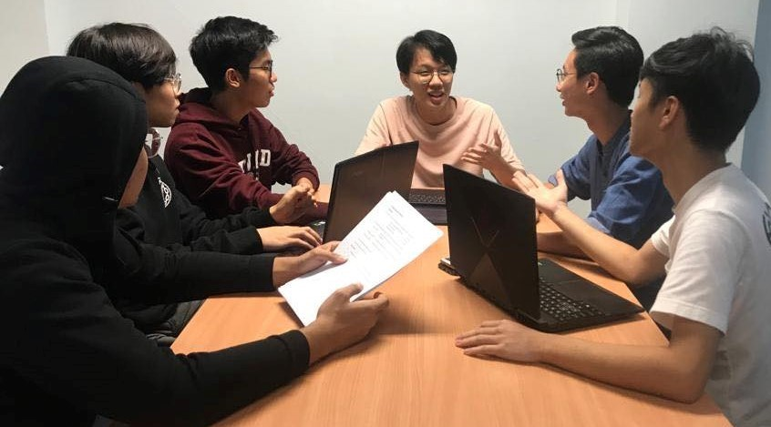
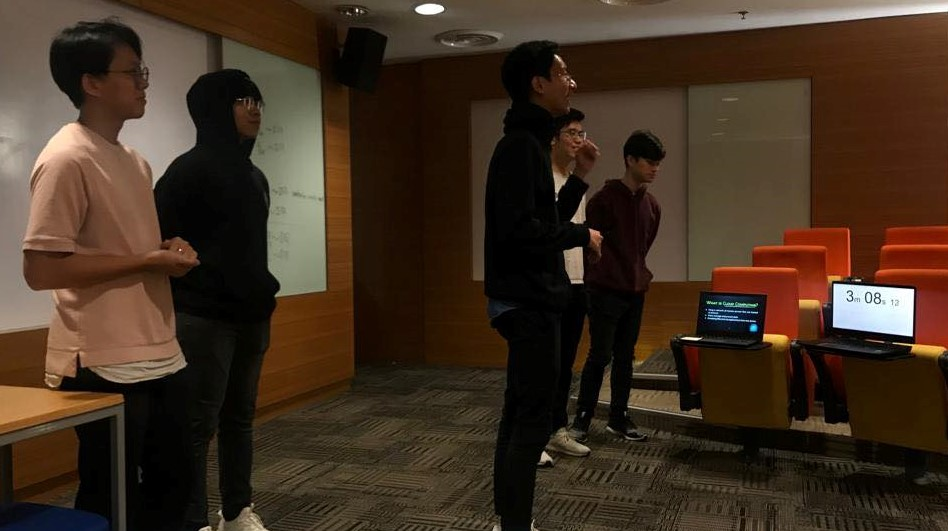
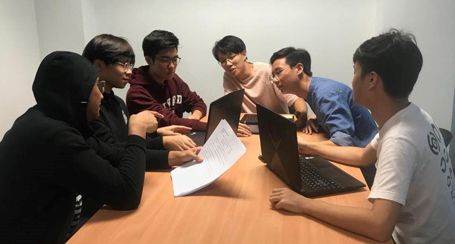
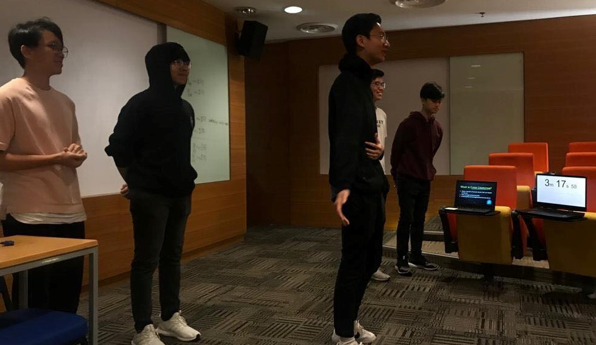
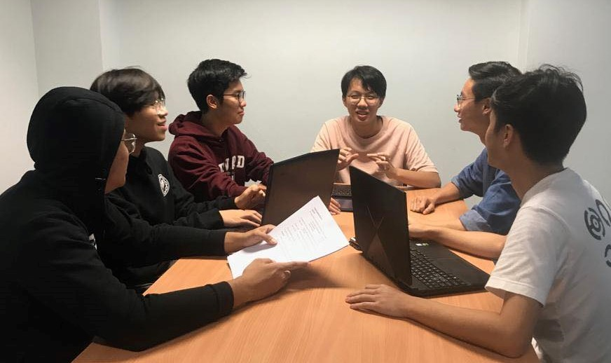

Discussion Notes
How to replace a common cloud computing service with a self-hosted
1st Meeting: 30th September 2019
Venue: Monash University Library Level 3 Discussion Room
1. Meeting started off by electing the leader.
2. Majority voted for Liow Gian Hao to lead us for this assignment.
3. The tasks were delegated as shown below:
Leader: Liow Gian Hao
Cloud Creation: Gerald Lee
Introduction Video: Un Kai Wen
Ethical Issues: Brandon John
Blog and Slides: Khor Cheng Ee
Meeting Notes: Timmothy Ong
4. Brainstorm session started to find out how to tackle this project as efficiently as possible.
5. Everyone was required to go back and research for information on cloud computing and come out with ideas in the next meeting.
6. Next meeting will be conducted two days later.
2nd Meeting: 2nd October 2019
Venue: Monash University Library Level 4 Discussion Room
1. Meeting started with each member presenting their findings on cloud computing.
2. Brainstorm session on how to create the best presentation.
3. Ideas include having more interaction with audience and live demonstration of creating a self-hosted cloud.
4. Parts for presentation were given to each member.
5. Every member was required to start working on their respective slides.
6. Next meeting was decided to be held two days later.
3rd Meeting: 4th October 2019
Venue: Monash University Library Level 3 Discussion Room
1. Meeting started with filming of introduction video by Kai Wen.
2. Meeting continued with everyone sharing what they have prepared for the presentation.
3. Everyone gave their opinions and modified the slides and scripts for improvisation.
4. Duration of 2 minutes and a half minutes was set for each members' parts.
5. Last meeting will be held the day before the presentation.
4th Meeting: 7th October 2019
Venue: Monash University Library Level 4 Discussion Room
1. Final meeting a day before to get everyone on track.
2. Meeting started with rehearsal of presentation.
3. Everyone timed their own parts and some had to modify their scripts to avoid exceeding given presentation time.
4. Another round of rehearsal continued and we fixed our body languages and movements to perfect the presentation.
5. Dress code was set as white dress shirt with black slacks and shoes.
6. Meeting time the next day is at 8am, one hour before presentation and last round of rehearsal is supposed to be done.
Some interesting pictures taken during meetings:




